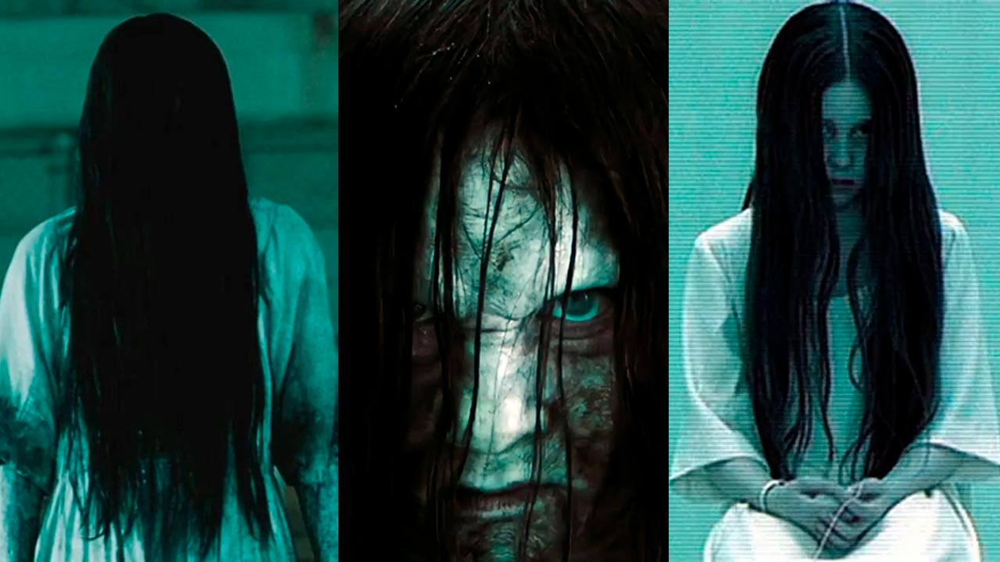

The Ring (em pt-BR: O Chamado, e pt-PT: The Ring - O Aviso) é um filme estadunidense de 2002 do gênero terror psicológico. Com direção de Gore Verbinski, roteiro de Ehren Kruger e trilha sonora de Hans Zimmer, é uma regravação do filme japonês Ringu, que por sua vez foi adaptado do romance homônimo de Koji Suzuki.
O orçamento do filme foi de US$ 48 milhões e a receita mundial foi de US$ 249 milhões
A repórter Rachel Keller (Naomi Watts) decide investigar a misteriosa morte de sua sobrinha Katie Embry (Amber Tamblyn), que, segundo os médicos, morreu de parada cardíaca. Tudo indica que sua morte está relacionada a uma sinistra fita de vídeo, que dizem ser amaldiçoada pelo espírito de uma garotinha de roupa branca e cabelos longos, pois, ao término do filme, o telefone toca e uma estranha voz anuncia a morte de quem a assiste para uma semana.
No início, pensando que se trata apenas de um boato de colégio, a repórter decide assistir a tal fita e, ao seu término, recebe o telefonema macabro.
O que antes parecia ser apenas uma lenda urbana, acabada se tornando um terror real, quando o filho da repórter, o pequeno Aidan Keller (David Dorfman), sofrendo de insônia, encontra a fita e também a assiste.
Rachel agora tem que lutar contra o tempo, sendo que ela tem apenas os sete dias para descobrir de onde veio a fita, quem a produziu e o motivo dela matar as pessoas que a assistem nesse curto período de tempo.
Rachel vai atrás da verdadeira história de Samara, a garotinha que aparece no vídeo. Enquanto isso, coisas assustadoras começam a acontecer.
Para interpretar a jornalista Rachel Keller, inicialmente estavam cotadas as atrizes Nicole Kidman, Jennifer Connelly, Julianne Moore, Jodie Foster e Julia Roberts. Nicole e Julianne não aceitaram porque estavam, na época, gravando o filme The Hours. Jennifer recusou o papel por motivos desconhecidos. Jodie, como havia terminado de gravar Panic Room e havia entrado em férias, nem sequer recebeu um convite oficial da produtora. Julia, por sua vez, já havia sido convidada para dois trabalhos, naquele período. Foi então que Gore Verbinski, após assistir o filme Mulholland Drive, se lembrou de Naomi Watts e a convidou. Naomi, então, aceitou o papel.
O filme teve boa aceitação do público, rendendo ao estúdio aproximadamente 130 milhões de dólares, além de ter ficado por oito semanas nas salas de cinema como um dos dez filmes mais assistidos de 2002.
Na cronologia japonesa - que, claro, é diferente da norte-americana -, o filme já é considerado um capítulo isolado, que utiliza apenas a figura da assassina Sadako e sua maldição como base. O mais próximo de uma sequência direta nos anos recentes foi o longa Sadako: Capítulo Final (2019), que contou com o retorno de Hideo Nakata, diretor dos clássicos originais dos anos 1990. O longa foi lançado no Brasil, e está disponível no catálogo do Amazon Prime Video.
Já a cronologia americana é um pouco diferente, iniciada com O Chamado (2002), um remake do clássico japonês que segue a mesma trama e regras do original, mas com uma assassina chamada Samara Morgan. A personagem deu as caras novamente em O Chamado 2 (2005), e depois retornou para um terceiro filme em 2017. Lá fora, o fim da trilogia é conhecido apenas como Rings, mas na América Latina foi batizado de O Chamado 3.

Cenas do filme O Chamado
O Chamado (2002)
Filmes
O Chamado (2012) • O Chamado 2 (2005) • O Chamado 3 (2017)
Atores
Naomi Watts • Martin Henderson • David Dorfman • Brian Cox • Jane Alexander • Lindsay Frost • Amber Tamblyn • Rachael Bella • Daveigh Chase • Shannon Cochran
Artigos Relacionados
Filmes de terror dos Estados Unidos • Filmes de terror • Filmes de terror do Japão • Samako